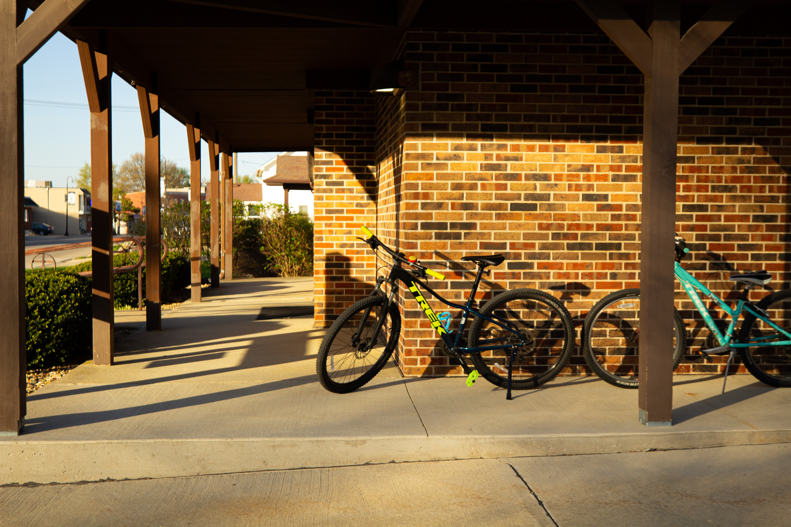
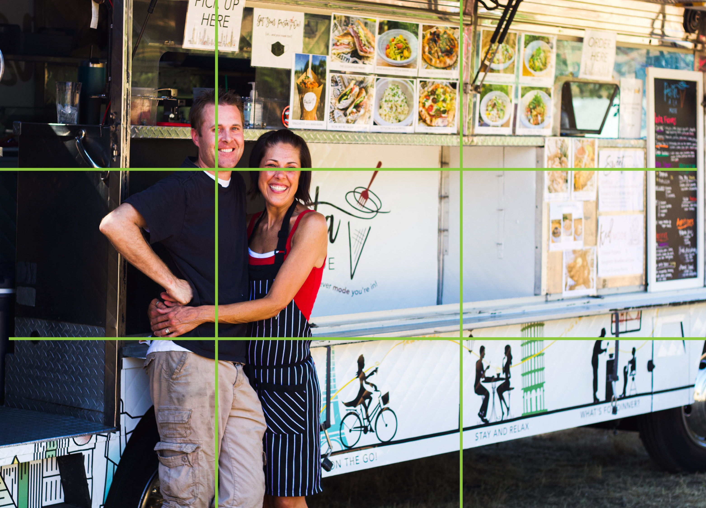
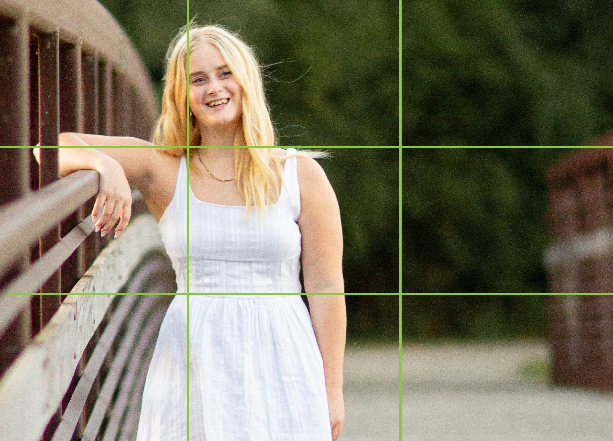

Hi, I'm Heather! I'm a brand designer & photographer in the illuminating Boise, Idaho.
I opened my computer today to give you some tippy-poos on your photography.Pictures. Images. Photography. Visual Storytelling. BRANDING.
Now, you might be thinking, "Oh, but lady... I don't need "better" images. We had a friend take a picture
of us by the tree out back in our blue jeans and white t-shirts. ALSO, I take pictures of
the stuff we sell and post it to Facebook. We are good!"
If you can't tell, I am PaSsIoNaTe AbOuT pHoToGrApHy & DeSiGn.
HOWEVER!!!! I get it. You can't afford to get your favorite brand photographer in your store
every month for a refresh of brand photos, team photos, your photos, and the engagement post photo of your cute dog everyone loves to pet after shopping.
SO, Here's a DIY Guide to improving your branding photos, all by yourself:
Step 1. You're telling a story. Get in story mode.This might seem stupid, but it's true. (and also not stupid.)
 This photo has soft, natural lighting, in a relevant setting, and she's telling a story simply by being on her laptop.
This photo has soft, natural lighting, in a relevant setting, and she's telling a story simply by being on her laptop.
These photos are representing you, your brand, and your business. Poor quality images deteriorate your brand.
When you click onto a website and see all stock photography that clearly looks fake, or photos that are really dark, blurry, and lacking detail... how do you feel?
You probably click off the website and go find a competitor with better pictures, right? That could be what's happening if your photos don't
represent the awesome business you run, with your awesome team, with your beautiful products and/or services, your really cool storefront, etc.
We aren't just "taking some quick pics." We are telling the story of your business and what it stands for. What is your business all about?
Why do your customers NEED you and your services? Why do they want to buy your products and talk to their friends about it? That's what great photos can help you do.

I wanted to show the bikes parked at this church for a family dinner event. I got lower than usual for "drama."What I mean literally is get on the level of the product. We aren't getting our phones out and taking a picture from a standing position. Get low. and let's see this product from a more editorial view. This product is a star. Let's put it on the red carpet.
Step 3. Lights, Camera, Action!Lighting. It is everything. (alongside composition, focal points, depth of field, yadda yadda.) A poorly-lit image is something people will gloss over. They will think this is am amateur business DIY-ing it. (I mean, you are, but they don't need to know they know we know. You know?) It's like a video with bad audio. If you can't hear it, it doesn't matter how well you can see it. Bad audio is like nails on a chalkboard. Same thing for photography... Bad lighting takes the whole image out. If I can't see it, I'm going to click away. The article beside it won't make sense. I won't get why this product is $32, because I can't see the detail.
Step 4. Composition, baby.Ah, composition. Beside the creativity of photography is a technical side that I really geek out on. So, bare with me; You might find it awful, but it's helpful to understand.
There is this thing in photography called the rule of thirds. When you compose a photo, you want a plan of where the horizon and/or subject of the photo
will be. There's way more depth to discover on this topic, but that's a yap for another day. For now, I'll give the surface level deets below.
If you're on an iphone, you can turn on the "grid" by going to settings > camera > and turn on the grid toggle. I'm an Apple lady and I really don't care for oranges, but if you have another device, a quick Google will do the trick.
The rule of thirds is a guideline that says to divide an image into a 3x3 grid with two vertical and two horizontal lines.
If you place your subject or horizon at these lines, or at their intersecting points, you will have a more balanced image. Balance and purpose in photography is so much
better than a perfectly centered subject.
I say that this is a guideline for a reason. Obviously, creativity and exploring different compositions in photography will be encouraged. Don't let a guideline stop you from trying a new idea.
Composition and lighting are truly the basic fundamentals to great photography. Start here, and the rest will come easier!


Scenery. What a lovely mountain, a beautiful river, or the bloody backdrop of two bears destroyng a salmon.
Obviously you probably won't have these as a background when it comes to your business photography, but you get the idea.
My best advice when it comes to your brand photos beyond great lighting and good composition, is to keep it simple.
If you are taking a photo of a product: The product is the star. Set up a clean, clear "stage" so it can shine.
Service based business? Grab photos of before and after. People LOVE a before and after. Take photos of the result.
If you're an artist, consider placing your easle near a big window, and just showcasing the artwork next to the paint you used. Maybe place it on a clear wall so it shines all on its own.
Realtor? Listen, a selfie in a cool bathroom (with the permission of your client of course) will tell me everything I need to know about you. You're cool, fun, and you can spot a cool bathroom.
No matter the service you offer, take pictures of your process and day-to-day. Get photos of the people who help you. Take pictures together on a coffee run. These speak volumes over perfect stock photos.
This is your brand. And branding is all about sharing with the world, who and what your business is.
It lets your ideal customer develop a connection with you before they interact with you, and helps them build on that connection afterwards. Why chose you over your competition? Make them so comfortable they don't even need to think twice.
When they click onto your website, social media, fill out a form, etc. they will see and feel like there's no other option for them!
 This has great composition, lighting, and staging.
This has great composition, lighting, and staging.
Just kidding. Math isn't my strength and that's why I have an art degree.
This is what I have for you today, Wednesday, August 26th, 2026. (So you know how old or new this is.)
If you're thinking about branding & photography, it's my jam and I'd love to help you.
If you'd like a branding session and want someone to come show you how to do it yourself for the next time... I'm down.
Send me a message. If you send nice words I'll probably get back to you faster. If you're mean it will take me some extra business days.